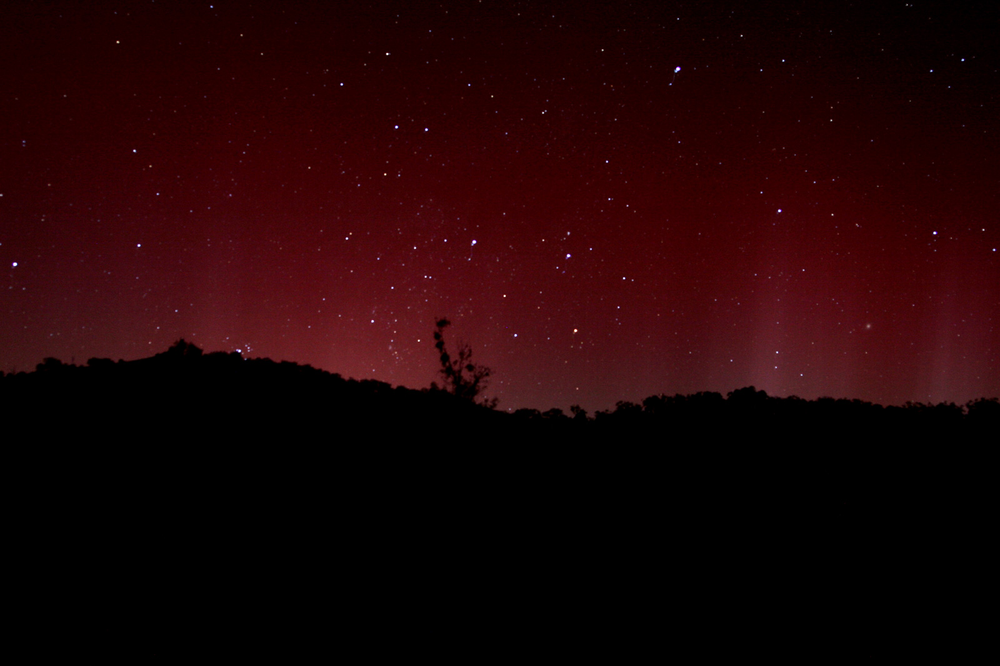
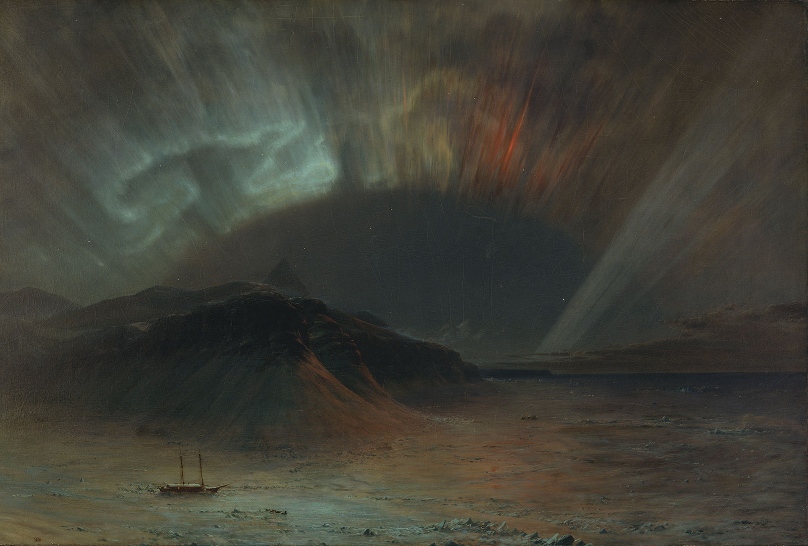

theories & superstitions
An aurora was described by the Greek explorer Pytheas in the 4th century BC. Seneca wrote about auroras in the first book of his Naturales Quaestiones, classifying them, for instance as pithaei (‘barrel-like’); chasmata (‘chasm’); pogoniae (‘bearded’); cyparissae (‘like cypress trees’), and describing their manifold colors. He wrote about whether they were above or below the clouds, and recalled that under Tiberius, an aurora formed above the port city of Ostia that was so intense and red that a cohort of the army, stationed nearby for fire duty, galloped to the rescue. It has been suggested that Pliny the Elder depicted the aurora borealis in his Natural History, when he refers to trabes, chasma, ‘falling red flames’ and ‘daylight in the night’.
The history of China has rich and, possibly the oldest, records of the aurora borealis. On an autumn around 2000 BC, according to a legend, a young woman named Fubao was sitting alone in the wilderness by a bay, when suddenly an “magical band of light” appeared like “moving clouds and flowing water”, turning into a bright halo around the Big Dipper, which cascaded a pale silver brilliance, illuminating the earth and making shapes and shadows seem alive. Moved by this sight, Fubao became pregnant and gave birth to a song, the Emperor Xuanyuan, known legendarily as the initiator of Chinese culture and the ancestor of all Chinese people.In the Shanhaijing, a creature named ‘Shilong’ is described to be like a red dragon shining in the night sky with a body a thousand miles long.In ancient times, the Chinese did not have a fixed word for the aurora, so it was named according to the different shapes of the aurora, such as “Sky Dog”, “Sword/Knife Star, “Chiyou banner”, “Sky’s Open Eyes”, and “Stars like Rain”.
In Japanese folklore, pheasants were considered messengers from heaven. However, researchers from Japan’s Graduate University for Advanced Studies and National Institute of Polar Research claimed in March 2020 that red pheasant tails witnessed across the night sky over Japan in 620 A.D., might be a red aurora produced during a magnetic storm.
In the traditions of Aboriginal Australians, the Aurora Australis is commonly associated with fire. For example, the Gunditjmara people of western Victoria called auroras puae buae (‘ashes’), while the Gunai people of eastern Victoria perceived auroras as bushfires in the spirit world. The Dieri people of South Australia say that an auroral display is kootchee, an evil spirit creating a large fire. Similarly, the Ngarrindjeri people of South Australia refer to auroras seen over Kangaroo Island as the campfires of spirits in the ‘Land of the Dead’. Aboriginal people in southwest Queensland believe the auroras to be the fires of the Oola Pikka, ghostly spirits who spoke to the people through auroras. Sacred law forbade anyone except male elders from watching or interpreting the messages of ancestors they believed were transmitted through an aurora.
 The Aboriginal Australians associated auroras (which are mainly low on the horizon and predominantly red) with fire.
Bulfinch’s Mythology relates that in Norse mythology, the armour of the Valkyrior “sheds a strange flickering light, which flashes up over the northern skies, making what Men call the ‘aurora borealis’, or ‘Northern Lights’”. There appears to be no evidence in Old Norse literature to substantiate this assertion. The first Old Norse account of norðrljós is found in the Norwegian chronicle Konungs Skuggsjá from AD 1230. The chronicler has heard about this phenomenon from compatriots returning from Greenland, and he gives three possible explanations: that the ocean was surrounded by vast fires; that the sun flares could reach around the world to its night side; or that glaciers could store energy so that they eventually became fluorescent.
Walter William Bryant wrote in his book Kepler (1920) that Tycho Brahe “seems to have been something of a homœopathist, for he recommends sulfur to cure infectious diseases “brought on by the sulphurous vapours of the Aurora Borealis.”
In 1778, Benjamin Franklin theorized in his paper Aurora Borealis, Suppositions and Conjectures towards forming an Hypothesis for its Explanation that an aurora was caused by a concentration of electrical charge in the polar regions intensified by the snow and moisture in the air:
May not then the great quantity of electricity brought into the polar regions by the clouds, which are condens’d there, and fall in snow, which electricity would enter the earth, but cannot penetrate the ice; may it not, I say (as a bottle overcharged) break thro’ that low atmosphere and run along in the vacuum over the air towards the equator, diverging as the degrees of longitude enlarge, strongly visible where densest, and becoming less visible as it more diverges; till it finds a passage to the earth in more temperate climates, or is mingled with the upper air?
— Benjamin Franklin
Observations of the rhythmic movement of compass needles due to the influence of an aurora were confirmed in the Swedish city of Uppsala by Anders Celsius and Olof Hiorter. In 1741, Hiorter was able to link large magnetic fluctuations with an aurora being observed overhead. This evidence helped to support their theory that ‘magnetic storms’ are responsible for such compass fluctuations.
A variety of Native American myths surround the spectacle. The European explorer Samuel Hearne traveled with Chipewyan Dene in 1771 and recorded their views on the ed-thin (‘caribou’). According to Hearne, the Dene people saw the resemblance between an aurora and the sparks produced when caribou fur is stroked. They believed that the lights were the spirits of their departed friends dancing in the sky, and when they shone brightly it meant that their deceased friends were very happy.
During the night after the Battle of Fredericksburg, an aurora was seen from the battlefield. The Confederate Army took this as a sign that God was on their side, as the lights were rarely seen so far south. The painting Aurora Borealis by Frederic Edwin Church is widely interpreted to represent the conflict of the American Civil War.

A mid 19th-century British source says auroras were a rare occurrence before the 18th-century. It quotes Halley as saying that before the aurora of 1716, no such phenomenon had been recorded for more than 80 years, and none of any consequence since 1574. It says no appearance is recorded in the Transactions of the French Academy of Sciences between 1666 and 1716. And that one aurora recorded in Berlin Miscellany for 1797 was called a very rare event. One observed in 1723 at Bologna was stated to be the first ever seen there. Celsius (1733) states the oldest residents of Uppsala thought the phenomenon a great rarity before 1716. The period between approximately 1645 to 1715 corresponds to the Maunder minimum in sunspot activity.
It was the Norwegian scientist Kristian Birkeland who, in the early 1900s, laid the foundation for our current understanding of geomagnetism and polar auroras.